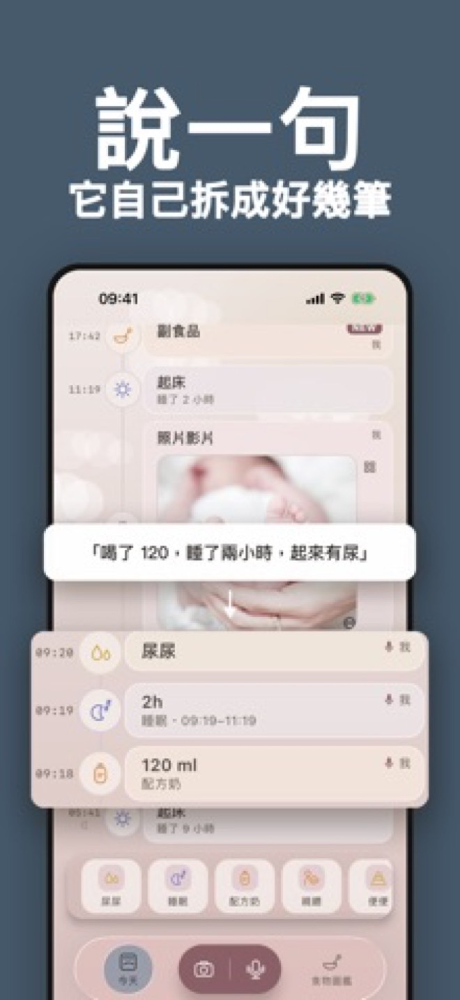
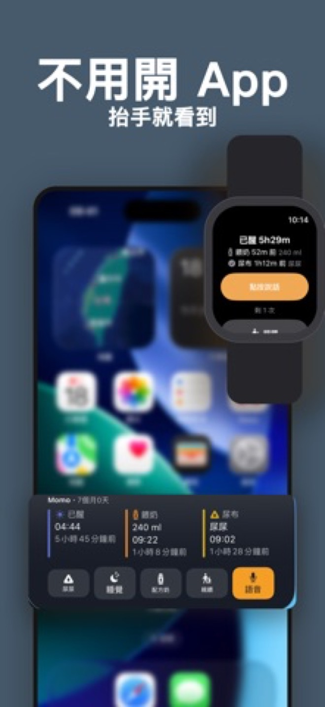
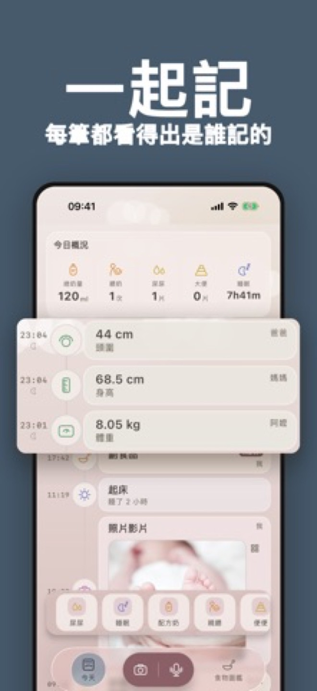
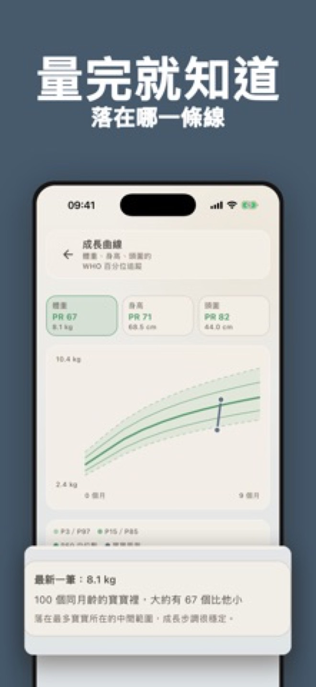
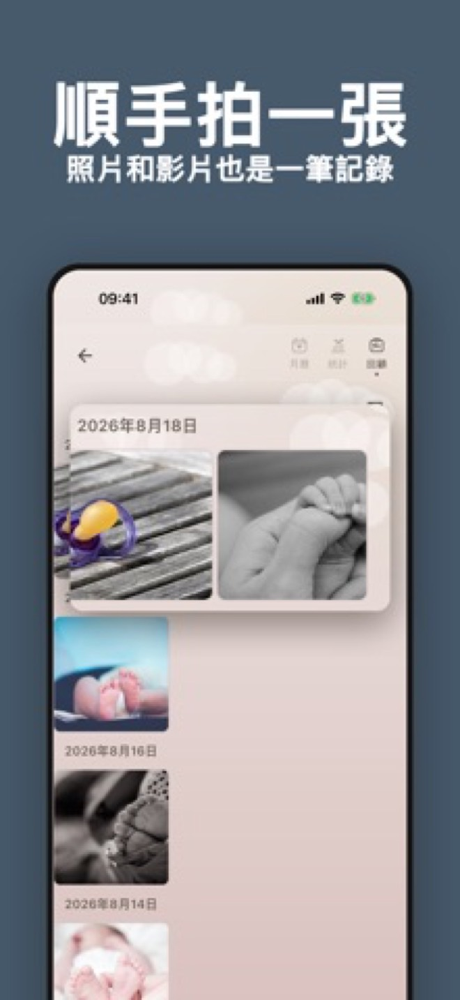
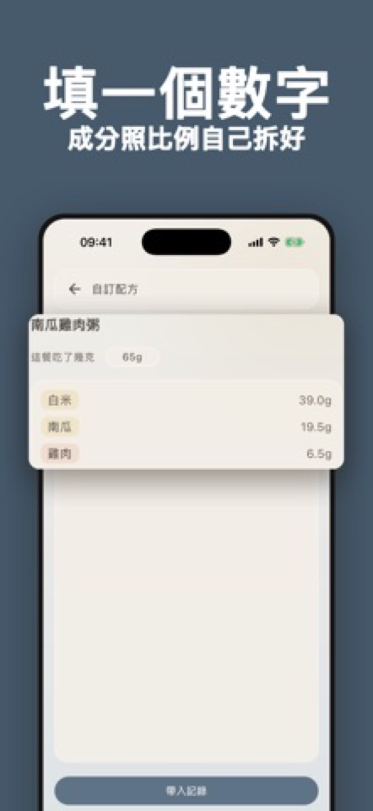
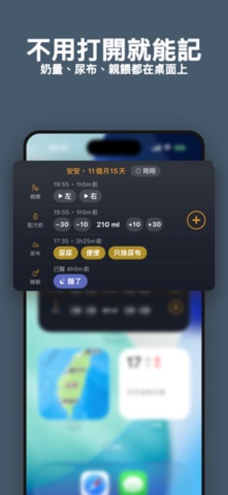

小鹿日誌 Deerly
一本全家共用的寶寶日誌，點一下、用說的或從小工具就能記，幾秒內大家都看得到。
- 單手或用說的就能記：說一句「120 ml，還有一片大便尿布」，就會拆成不同的紀錄。
- 每個照顧寶寶的人都記在同一本日誌，新紀錄幾秒內同步，每筆都看得到是誰記的，而且免費。
- 托嬰聯絡單和其他 App 的舊紀錄也能放進同一本日誌，旁邊就是 WHO 生長曲線與每日統計。
在 App Store 查看 在 Google Play 下載







小鹿日誌是給 0-2 歲寶寶爸媽的育兒紀錄 App。餵奶、睡眠、尿布、健康，一鍵就能記，也可以直接用說的，每個照顧者都知道上一次發生了什麼，不用再問來問去。
另一半和阿公阿嬤可以一起記錄同一個寶寶，新紀錄幾秒內就同步到每個人的手機，每筆都看得到是誰記的。再也不用傳訊息問「上一瓶是幾點喝的？」。
小鹿日誌也能讀取托嬰中心的每日聯絡單，並匯入完整的 Piyolog 匯出檔，原本散在紙本或其他 App 裡的紀錄，可以集中在同一個地方。
為誰而做
- 照顧 0-2 歲寶寶的爸媽，和伴侶或長輩一起記同一個寶寶
- 半夜一手抱著寶寶餵奶、不方便打字的時候
- 把寶寶交給別人照顧，對方需要知道上一次餵奶或換尿布是什麼時候
- 從托嬰中心接寶寶，拿到紙本或 PDF 的聯絡單
- 要追蹤早產寶寶矯正年齡的爸媽，以及想把舊紀錄一起帶過來的 Piyolog 使用者
可以完成什麼
- 一鍵記錄，30+ 種紀錄類型 — 餵奶（親餵計時、瓶餵、配方奶、母乳瓶餵）、尿布、睡眠、副食品、體溫、用藥、疫苗、身高、體重等，一個 App 全包。
- 全家即時同步記錄 — 另一半和長輩一起記錄同一個寶寶，新紀錄幾秒內大家都看得到，每筆都標示是誰記的。免費。
- 語音記錄 — 說一句「120 ml，還有一片大便尿布」，就會拆成兩筆紀錄，不用打字。
- 主畫面與鎖定畫面小工具 — 不用開 App，直接從主畫面小工具記奶量、尿布、親餵和睡醒，可往前回補 15 分鐘到 2 小時；鎖定畫面看得到距離上次餵奶多久。
- Apple Watch 親餵計時 — 在手腕上開始、換邊、暫停親餵計時。
免費版與付費版
小鹿日誌可免費下載。記錄、所有紀錄類型、統計、生長曲線、家人共享紀錄與分享回顧都永久免費；免費版有廣告，語音記錄有使用次數限制。Deerly Pro 為訂閱制，可讓家人看到共享的照片與影片、提高語音記錄額度、匯出無浮水印的回顧影片、移除廣告、持續匯入托嬰聯絡單與 Piyolog，並可使用專屬寶寶角色；一人訂閱，整個家庭群組都能使用。Pro 月費 NT$120、年費 NT$920，年費方案含 2 個月免費試用。只需要單一功能的話，家人共享、去廣告、語音加量包也可以各自單獨訂閱，每月 NT$30。訂閱會自動續訂，可隨時在 App Store 帳號設定中取消。
隱私
同步與分享需要帳號（使用 Apple 登入或 Google 登入），帳號用來備份紀錄並與家人共享。紀錄透過小鹿日誌自己的伺服器同步。照片與影片只會短暫經過伺服器轉送給家人裝置，之後就從伺服器刪除，保留的檔案在家人的手機上。免費版會透過 AdMob 顯示廣告，已在 App Store 隱私權標籤中揭露；觀看獎勵廣告前會先出現 Apple 的追蹤授權提示。
常見問題
開發者
本站由這個 App 的開發者 Kennily(Ken)營運。 apps.kennily.app